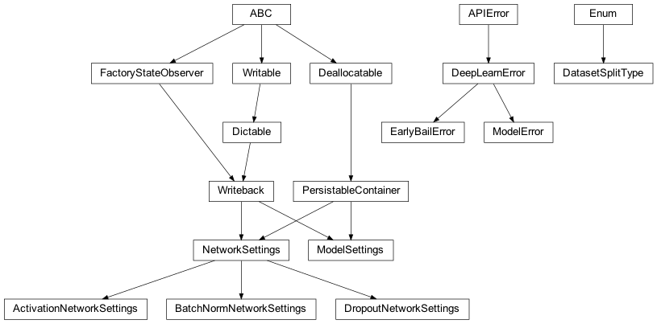
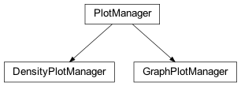
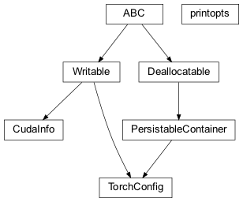

zensols.deeplearn package¶
Subpackages¶
- zensols.deeplearn.batch package
- zensols.deeplearn.cli package
- zensols.deeplearn.dataframe package
- zensols.deeplearn.layer package
- zensols.deeplearn.model package
- Submodules
- zensols.deeplearn.model.analyze
- zensols.deeplearn.model.batchiter
- zensols.deeplearn.model.executor
- zensols.deeplearn.model.facade
- zensols.deeplearn.model.manager
- zensols.deeplearn.model.meta
- zensols.deeplearn.model.module
- zensols.deeplearn.model.optimizer
- zensols.deeplearn.model.pred
- zensols.deeplearn.model.sequence
- zensols.deeplearn.model.trainmng
- zensols.deeplearn.model.wgtexecutor
- Module contents
- zensols.deeplearn.result package
- zensols.deeplearn.vectorize package
Submodules¶
zensols.deeplearn.domain¶

This file contains classes that configure the network and classifier runs.
-
class
zensols.deeplearn.domain.ActivationNetworkSettings(name, config_factory, activation)[source]¶ Bases:
zensols.deeplearn.domain.NetworkSettingsA network settings that contains a activation setting and creates a activation layer.
-
__init__(name, config_factory, activation)¶ Initialize self. See help(type(self)) for accurate signature.
-
property
activation_function¶
-
-
class
zensols.deeplearn.domain.BatchNormNetworkSettings(name, config_factory, batch_norm_d, batch_norm_features)[source]¶ Bases:
zensols.deeplearn.domain.NetworkSettingsA network settings that contains a batchnorm setting and creates a batchnorm layer.
-
__init__(name, config_factory, batch_norm_d, batch_norm_features)¶ Initialize self. See help(type(self)) for accurate signature.
-
batch_norm_d: int¶ The dimension of the batch norm or
Noneto disable. Based on this one of the following is used as a layer:
-
property
batch_norm_layer¶
-
-
class
zensols.deeplearn.domain.DatasetSplitType(value)[source]¶ Bases:
enum.EnumIndicates an action on the model, which is first trained, validated, then tested.
Implementation note: for now
testis used for both testing the model and ad-hoc prediction-
test= 3¶
-
train= 1¶
-
validation= 2¶
-
-
exception
zensols.deeplearn.domain.DeepLearnError[source]¶ Bases:
zensols.util.APIErrorRaised for any frame originated error.
-
__module__= 'zensols.deeplearn.domain'¶
-
-
class
zensols.deeplearn.domain.DropoutNetworkSettings(name, config_factory, dropout)[source]¶ Bases:
zensols.deeplearn.domain.NetworkSettingsA network settings that contains a dropout setting and creates a dropout layer.
-
__init__(name, config_factory, dropout)¶ Initialize self. See help(type(self)) for accurate signature.
-
property
dropout_layer¶
-
-
exception
zensols.deeplearn.domain.EarlyBailError[source]¶ Bases:
zensols.deeplearn.domain.DeepLearnErrorConvenience used for helping debug the network.
-
__module__= 'zensols.deeplearn.domain'¶
-
-
exception
zensols.deeplearn.domain.ModelError[source]¶ Bases:
zensols.deeplearn.domain.DeepLearnErrorRaised for any model related error.
-
__module__= 'zensols.deeplearn.domain'¶
-
-
class
zensols.deeplearn.domain.ModelSettings(name, config_factory, path, learning_rate, epochs, max_consecutive_increased_count=9223372036854775807, nominal_labels=True, batch_iteration_class_name=None, criterion_class_name=None, optimizer_class_name=None, optimizer_params=None, scheduler_class_name=None, scheduler_params=None, reduce_outcomes='argmax', shuffle_training=False, batch_limit=9223372036854775807, batch_iteration='cpu', prediction_mapper_name=None, cache_batches=True, gc_level=0)[source]¶ Bases:
zensols.config.writeback.Writeback,zensols.persist.annotation.PersistableContainerThis configures and instance of
ModelExecutor. This differes fromNetworkSettingsin that it configures the model parameters, and not the neural network parameters.Another reason for these two separate classes is data in this class is not needed to rehydrate an instance of
torch.nn.Module.The loss function strategy across parameters
nominal_labels,criterion_classandoptimizer_class, must be consistent. The defaults uses nominal labels, which means a single integer, rather than one hot encoding, is used for the labels. Most loss function, including the defaulttorch.nn.CrossEntropyLoss`uses nominal labels. The optimizer defaults totorch.optim.Adam.However, if
nominal_labelsis set toFalse, it is expected that the label output is aLongone hot encoding of the class label that must be decoded withBatchIterator._decode_outcomes()and uses a loss function such astorch.nn.BCEWithLogitsLoss, which applies a softmax over the output to narow to a nominal.If the
criterion_classis left as the default, the class the corresponding class across these two is selected based onnominal_labels.Note: Instances of this class are pickled as parts of the results in
zensols.deeplearn.result.domain.ModelResult, so they must be able to serialize. However, they are not used to restore the executor or model, which are instead, recreated from the configuration for each (re)load (see the package documentation for more information).- See
-
__init__(name, config_factory, path, learning_rate, epochs, max_consecutive_increased_count=9223372036854775807, nominal_labels=True, batch_iteration_class_name=None, criterion_class_name=None, optimizer_class_name=None, optimizer_params=None, scheduler_class_name=None, scheduler_params=None, reduce_outcomes='argmax', shuffle_training=False, batch_limit=9223372036854775807, batch_iteration='cpu', prediction_mapper_name=None, cache_batches=True, gc_level=0)¶ Initialize self. See help(type(self)) for accurate signature.
-
batch_iteration: str = 'cpu'¶ How the batches are buffered, which is one of:
gpu, buffers all data in the GPUcpu, which means keep all batches in CPU memory (the default)bufferedwhich means to buffer only one batch at a time (only for very large data).
-
batch_iteration_class_name: dataclasses.InitVar[str] = None¶ A string fully qualified class name of type
BatchIterator. This must be set to a class such asScoredBatchIteratorto handle descrete states in the output layer such as terminating CRF states. The default isBatchIterator, which expects continuous output layers.
-
batch_limit: Union[int, float] = 9223372036854775807¶ The max number of batches to train, validate and test on, which is useful for limiting while debuging; defaults to sys.maxsize. If this value is a float, it is assumed to be a number between [0, 1] and the number of batches is multiplied by the value.
-
criterion_class_name: dataclasses.InitVar[str] = None¶ The loss function class name (see class doc).
-
gc_level: int = 0¶ The frequency by with the garbage collector is invoked. The higher the value, the more often it will be run during training, testing and validation.
-
max_consecutive_increased_count: int = 9223372036854775807¶ The maximum number of times the validation loss can increase per epoch before the executor “gives up” and early stops training.
-
nominal_labels: bool = True¶ Trueif using numbers to identify the class as an enumeration rather than a one hot encoded array.
-
optimizer_class_name: dataclasses.InitVar[str] = None¶ The optimization algorithm class name (see class doc).
-
optimizer_params: Dict[str, Any] = None¶ The parameters given as
**kwargswhen creating the optimizer. Do not add the learning rate, instead seelearning_rate.
-
path: pathlib.Path¶ The path to save and load the model.
-
prediction_mapper_name: str = None¶ Creates data points from a client for the purposes of prediction. This value is the string class name of an instance of
PredictionMapperused to create predictions. While optional, if not set, ad-hoc predictions (i.e. from the command line) can not be created.Instances of
PredictionMapperare created and managed in theModelFacade.
-
reduce_outcomes: str = 'argmax'¶ The method by which the labels and output is reduced. The output is optionally reduced, which is one of the following:
argmax: uses the index of the largest value, which is used for classification models and the defaultsoftmax: just likeargmaxbut applies a softmaxnone: return the identity.
-
scheduler_class_name: str = None¶ The fully qualified class name of the learning rate scheduler used for the optimizer (if not
None) such as:- See
-
class
zensols.deeplearn.domain.NetworkSettings(name, config_factory)[source]¶ Bases:
zensols.config.writeback.Writeback,zensols.persist.annotation.PersistableContainerA container settings class for network models. This abstract class must return the fully qualified (with module name) PyTorch model (`torch.nn.Module`) that goes along with these settings. An instance of this class is saved in the model file and given back to it when later restored.
Note: Instances of this class are pickled as parts of the results in
zensols.deeplearn.result.domain.ModelResult, so they must be able to serialize. However, they are not used to restore the executor or model, which are instead, recreated from the configuration for each (re)load (see the package documentation for more information).- See
-
__init__(name, config_factory)¶ Initialize self. See help(type(self)) for accurate signature.
-
config_factory: zensols.config.factory.ConfigFactory¶
zensols.deeplearn.plot¶

Graphcal plotting convenience utilities.
-
class
zensols.deeplearn.plot.DensityPlotManager(data, covariance_factor=0.5, interval=None, margin=None, *args, **kwargs)[source]¶ Bases:
zensols.deeplearn.plot.PlotManagerCreate density plots.
-
class
zensols.deeplearn.plot.GraphPlotManager(graph, style='spring', pos=None, *args, **kwargs)[source]¶ Bases:
zensols.deeplearn.plot.PlotManagerConvenience class for plotting
networkxgraphs.
-
class
zensols.deeplearn.plot.PlotManager(geometry=(50, 0), size=(5, 5), block=False)[source]¶ Bases:
objectA Convenience class to give window geomtry placement and blocking.
-
__init__(geometry=(50, 0), size=(5, 5), block=False)[source]¶ Initialize self. See help(type(self)) for accurate signature.
-
property
ax¶
-
property
fig¶
-
zensols.deeplearn.torchconfig¶

CUDA access and utility module.
-
class
zensols.deeplearn.torchconfig.CudaInfo[source]¶ Bases:
zensols.config.writable.WritableA utility class that provides information about the CUDA configuration for the current (hardware) environment.
-
class
zensols.deeplearn.torchconfig.TorchConfig(use_gpu=True, data_type=torch.float32, cuda_device_index=None)[source]¶ Bases:
zensols.persist.annotation.PersistableContainer,zensols.config.writable.WritableA utility class that provides access to CUDA APIs. It provides information on the current CUDA configuration and convenience methods to create, copy and modify tensors. These are handy for any given CUDA configuration and can back off to the CPU when CUDA isn’t available.
-
CPU_DEVICE= 'cpu'¶
-
__init__(use_gpu=True, data_type=torch.float32, cuda_device_index=None)[source]¶ Initialize this configuration.
-
static
close(a, b)[source]¶ Return whether or not two tensors are equal. This does an exact cell comparison.
- Return type
-
property
cpu_device¶ Return the CPU CUDA device, which is the device type configured to utilize the CPU (rather than the GPU).
- Return type
device
-
property
cuda_device_index¶ Return the CUDA device index if CUDA is being used for this configuration. Otherwise return
None.
-
property
device¶ Return the torch device configured.
- Return type
device
-
static
empty_cache()[source]¶ Empty the CUDA torch cache. This releases memory in the GPU and should not be necessary to call for normal use cases.
-
static
equal(a, b)[source]¶ Return whether or not two tensors are equal. This does an exact cell comparison.
- Return type
-
property
float_type¶ Return the float type that represents this configuration, converting to the corresponding precision from integer if necessary.
- Return type
- Returns
the float that represents this data, or
Noneif neither float nor int
-
from_iterable(array)[source]¶ Return a one dimenstional tensor created from
arrayusing the type and device in the current instance configuration.- Return type
-
from_numpy(arr)[source]¶ Return a new tensor generated from a numpy aray using
torch.from_numpy. The array type is converted if necessary.- Return type
-
classmethod
get_random_seed()[source]¶ Get the cross system random seed, meaning the seed applied to CUDA and the Python random library.
- Return type
-
classmethod
get_random_seed_context()[source]¶ Return the random seed context given to
set_random_seed()to restore across models for consistent results.
-
classmethod
init(spawn_multiproc='spawn', seed_kwargs={})[source]¶ Initialize the PyTorch framework. This includes:
Configuration of PyTorch multiprocessing so subprocesses can access the GPU, and
Setting the random seed state.
The needs to be initialized at the very beginning of your program.
- Example::
- def main():
from zensols.deeplearn.init import TorchInitializer TorchInitializer.init()
Note: this method is separate from
set_random_seed()because that method is called by the framework to reset the seed after a model is unpickled.
-
property
int_type¶ Return the int type that represents this configuration, converting to the corresponding precision from integer if necessary.
- Return type
- Returns
the int that represents this data, or
Noneif neither int nor float
-
property
numpy_data_type¶ Return the numpy type that corresponds to this instance’s configured
data_type.- Return type
Type[dtype]
-
same_device(tensor_or_model)[source]¶ Return whether or not a tensor or model is in the same memory space as this configuration instance.
- Return type
-
classmethod
set_random_seed(seed=0, disable_cudnn=True, rng_state=True)[source]¶ Set the random number generator for PyTorch.
- Parameters
- See
- See
-
property
tensor_class¶ Return the class type based on the current configuration of this instance. For example, if using
torch.float32on the GPU,torch.cuda.FloatTensoris returned.- Return type
Type[dtype]
-
to(tensor_or_model)[source]¶ Copy the tensor or model to the device this to that of this configuration.
-
classmethod
to_cpu_deallocate(*arrs)[source]¶ Safely copy detached memory to the CPU and delete local instance (possibly GPU) memory to speed up resource deallocation. If the tensor is already on the CPU, it’s simply passed back. Otherwise the tensor is deleted.
This method is robust with
None, which are skipped and substituted asNonein the output.
-
write(depth=0, writer=<_io.TextIOWrapper name='<stdout>' mode='w' encoding='utf-8'>)[source]¶ Write the contents of this instance to
writerusing indentiondepth.- Parameters
depth (
int) – the starting indentation depthwriter (
TextIOBase) – the writer to dump the content of this writable
-
-
class
zensols.deeplearn.torchconfig.printopts(**kwargs)[source]¶ Bases:
objectObject used with a
withscope that sets options, then sets them back.Example:
with printopts(profile='full', linewidth=120): print(tensor)
-
DEFAULTS= {'edgeitems': 3, 'linewidth': 80, 'precision': 4, 'profile': 'default', 'sci_mode': None, 'threshold': 1000}¶
-
zensols.deeplearn.torchtype¶
CUDA access and utility module.
-
class
zensols.deeplearn.torchtype.TorchTypes[source]¶ Bases:
objectA utility class to convert betwen numpy and torch classes. It also provides metadata for types that make other conversions, such as same precision cross types (i.e. int64 -> float64).
-
FLOAT_TO_INT= {torch.float16: torch.int16, torch.float32: torch.int32, torch.float64: torch.int64}¶
-
FLOAT_TYPES= frozenset({torch.float32, torch.float16, torch.float64})¶
-
INT_TO_FLOAT= {torch.int16: torch.float16, torch.int32: torch.float32, torch.int64: torch.float64}¶
-
INT_TYPES= frozenset({torch.int16, torch.int64, torch.int32})¶
-
NAME_TO_TYPE= {'bool': {'cpu': <class 'torch.BoolTensor'>, 'desc': 'Boolean', 'gpu': <class 'torch.cuda.BoolTensor'>, 'name': 'bool', 'numpy': <class 'bool'>, 'types': {torch.bool}}, 'float16': {'cpu': <class 'torch.HalfTensor'>, 'desc': '16-bit floating point', 'gpu': <class 'torch.cuda.HalfTensor'>, 'name': 'float16', 'numpy': <class 'numpy.float16'>, 'sparse': <class 'torch.sparse.HalfTensor'>, 'types': {torch.float16}}, 'float32': {'cpu': <class 'torch.FloatTensor'>, 'desc': '32-bit floating point', 'gpu': <class 'torch.cuda.FloatTensor'>, 'name': 'float32', 'numpy': <class 'numpy.float32'>, 'sparse': <class 'torch.sparse.FloatTensor'>, 'types': {torch.float32}}, 'float64': {'cpu': <class 'torch.DoubleTensor'>, 'desc': '64-bit floating point', 'gpu': <class 'torch.cuda.DoubleTensor'>, 'name': 'float64', 'numpy': <class 'numpy.float64'>, 'sparse': <class 'torch.sparse.DoubleTensor'>, 'types': {torch.float64}}, 'int16': {'cpu': <class 'torch.ShortTensor'>, 'desc': '16-bit integer (signed)', 'gpu': <class 'torch.cuda.ShortTensor'>, 'name': 'int16', 'numpy': <class 'numpy.int16'>, 'sparse': <class 'torch.sparse.ShortTensor'>, 'types': {torch.int16}}, 'int32': {'cpu': <class 'torch.IntTensor'>, 'desc': '32-bit integer (signed)', 'gpu': <class 'torch.cuda.IntTensor'>, 'name': 'int32', 'numpy': <class 'numpy.int32'>, 'sparse': <class 'torch.sparse.IntTensor'>, 'types': {torch.int32}}, 'int64': {'cpu': <class 'torch.LongTensor'>, 'desc': '64-bit integer (signed)', 'gpu': <class 'torch.cuda.LongTensor'>, 'name': 'int64', 'numpy': <class 'numpy.int64'>, 'sparse': <class 'torch.sparse.LongTensor'>, 'types': {torch.int64}}, 'int8': {'cpu': <class 'torch.CharTensor'>, 'desc': '8-bit integer (signed)', 'gpu': <class 'torch.cuda.CharTensor'>, 'name': 'int8', 'numpy': <class 'numpy.int8'>, 'sparse': <class 'torch.sparse.CharTensor'>, 'types': {torch.int8}}, 'uint8': {'cpu': <class 'torch.ByteTensor'>, 'desc': '8-bit integer (unsigned)', 'gpu': <class 'torch.cuda.ByteTensor'>, 'name': 'uint8', 'numpy': <class 'numpy.uint8'>, 'sparse': <class 'torch.sparse.ByteTensor'>, 'types': {torch.uint8}}}¶ A map of type to metadata.
-
TYPES= [{'desc': '32-bit floating point', 'name': 'float32', 'types': {torch.float32}, 'numpy': <class 'numpy.float32'>, 'sparse': <class 'torch.sparse.FloatTensor'>, 'cpu': <class 'torch.FloatTensor'>, 'gpu': <class 'torch.cuda.FloatTensor'>}, {'desc': '64-bit floating point', 'name': 'float64', 'types': {torch.float64}, 'numpy': <class 'numpy.float64'>, 'sparse': <class 'torch.sparse.DoubleTensor'>, 'cpu': <class 'torch.DoubleTensor'>, 'gpu': <class 'torch.cuda.DoubleTensor'>}, {'desc': '16-bit floating point', 'name': 'float16', 'types': {torch.float16}, 'numpy': <class 'numpy.float16'>, 'sparse': <class 'torch.sparse.HalfTensor'>, 'cpu': <class 'torch.HalfTensor'>, 'gpu': <class 'torch.cuda.HalfTensor'>}, {'desc': '8-bit integer (unsigned)', 'name': 'uint8', 'types': {torch.uint8}, 'numpy': <class 'numpy.uint8'>, 'sparse': <class 'torch.sparse.ByteTensor'>, 'cpu': <class 'torch.ByteTensor'>, 'gpu': <class 'torch.cuda.ByteTensor'>}, {'desc': '8-bit integer (signed)', 'name': 'int8', 'types': {torch.int8}, 'numpy': <class 'numpy.int8'>, 'sparse': <class 'torch.sparse.CharTensor'>, 'cpu': <class 'torch.CharTensor'>, 'gpu': <class 'torch.cuda.CharTensor'>}, {'desc': '16-bit integer (signed)', 'name': 'int16', 'types': {torch.int16}, 'numpy': <class 'numpy.int16'>, 'sparse': <class 'torch.sparse.ShortTensor'>, 'cpu': <class 'torch.ShortTensor'>, 'gpu': <class 'torch.cuda.ShortTensor'>}, {'desc': '32-bit integer (signed)', 'name': 'int32', 'types': {torch.int32}, 'numpy': <class 'numpy.int32'>, 'sparse': <class 'torch.sparse.IntTensor'>, 'cpu': <class 'torch.IntTensor'>, 'gpu': <class 'torch.cuda.IntTensor'>}, {'desc': '64-bit integer (signed)', 'name': 'int64', 'types': {torch.int64}, 'numpy': <class 'numpy.int64'>, 'sparse': <class 'torch.sparse.LongTensor'>, 'cpu': <class 'torch.LongTensor'>, 'gpu': <class 'torch.cuda.LongTensor'>}, {'desc': 'Boolean', 'name': 'bool', 'types': {torch.bool}, 'numpy': <class 'bool'>, 'cpu': <class 'torch.BoolTensor'>, 'gpu': <class 'torch.cuda.BoolTensor'>}]¶ A list of dicts containig conversions between types.
-
Module contents¶
A deep learning framework to make training, validating and testing models with PyTorch easier.